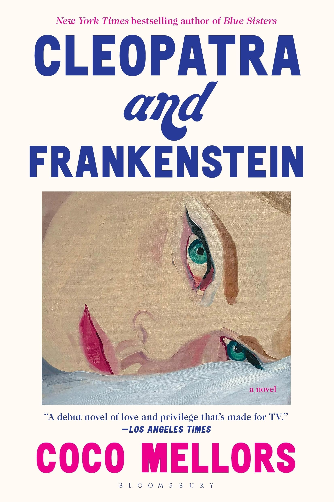
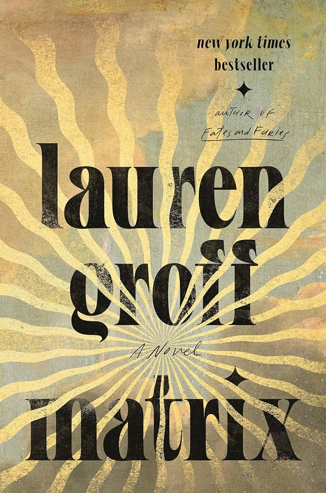
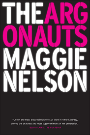
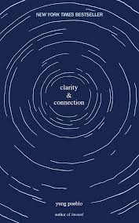
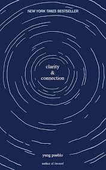
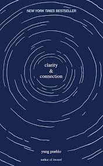

The three star reads... they were good, maybe I got a little bored, maybe it ended in a way I felt betrayed by, either way, I closed the book with a semi-bitter taste left in my mouth. I wouldn't disuade you from reading any of these, I would probably still encourage you to do so, and then say 'it just wasn't spectacular for me'.




 

